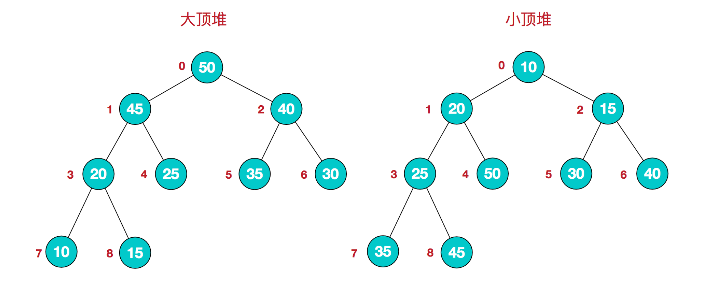

https://www.cnblogs.com/chengxiao/p/6129630.html
我们知道堆的结构是节点i的孩子为2 * i和2 * i + 1节点，大顶堆要求父节点大于等于其2个子节点，小顶堆要求父节点小于等于其2个子节点。在一个长为n 的序列，堆排序的过程是从第n / 2开始和其子节点共3个值选择最大（大顶堆）或者最小（小顶堆），这3个元素之间的选择当然不会破坏稳定性。但当为n / 2 - 1， n / 2 - 2， ... 1这些个父节点选择元素时，就会破坏稳定性。有可能第n / 2个父节点交换把后面一个元素交换过去了，而第n / 2 - 1个父节点把后面一个相同的元素没 有交换，那么这2个相同的元素之间的稳定性就被破坏了。所以，堆排序不是稳定的排序算法。
堆排序的思想
堆排序是利用堆这种数据结构而设计的一种排序算法，堆排序是一种选择排序，它的最坏，最好，平均时间复杂度均为O(nlogn)，它也是不稳定排序。首先简单了解下堆结构。
堆是具有以下性质的完全二叉树：每个结点的值都大于或等于其左右孩子结点的值，称为大顶堆；或者每个结点的值都小于或等于其左右孩子结点的值，称为小顶堆。如下图：

大顶堆：arr[i] >= arr[2i+1] && arr[i] >= arr[2i+2]
小顶堆：arr[i] <= arr[2i+1] && arr[i] <= arr[2i+2]
将待排序序列构造成一个大顶堆，此时，整个序列的最大值就是堆顶的根节点。将其与末尾元素进行交换，此时末尾就为最大值。然后将剩余n-1个元素重新构造成一个堆，这样会得到n个元素的次小值。如此反复执行，便能得到一个有序序列了
实例分析
- 构造一个初始堆，将给定无序序列构造一个大顶堆（一般升序采用大顶堆，降序采用小顶堆）

2.此时，从最后一个非叶子节点开始（叶节点自然不用调整，第一个非叶子节点arr.len/2-1 = 5/2-1=1,也就是6节点，从左至右，从下至上进行调整）

3.找到第二个非叶节点4，由于[4,9,8]中9元素最大，4和9交换。

4.交换导致了子根[4,5,6]结构混乱，继续调整，[4,5,6]中6最大，交换4和6。

再简单总结下堆排序的基本思路：
a.将无需序列构建成一个堆，根据升序降序需求选择大顶堆或小顶堆;
b.将堆顶元素与末尾元素交换，将最大元素"沉"到数组末端;
c.重新调整结构，使其满足堆定义，然后继续交换堆顶元素与当前末尾元素，反复执行调整+交换步骤，直到整个序列有序。